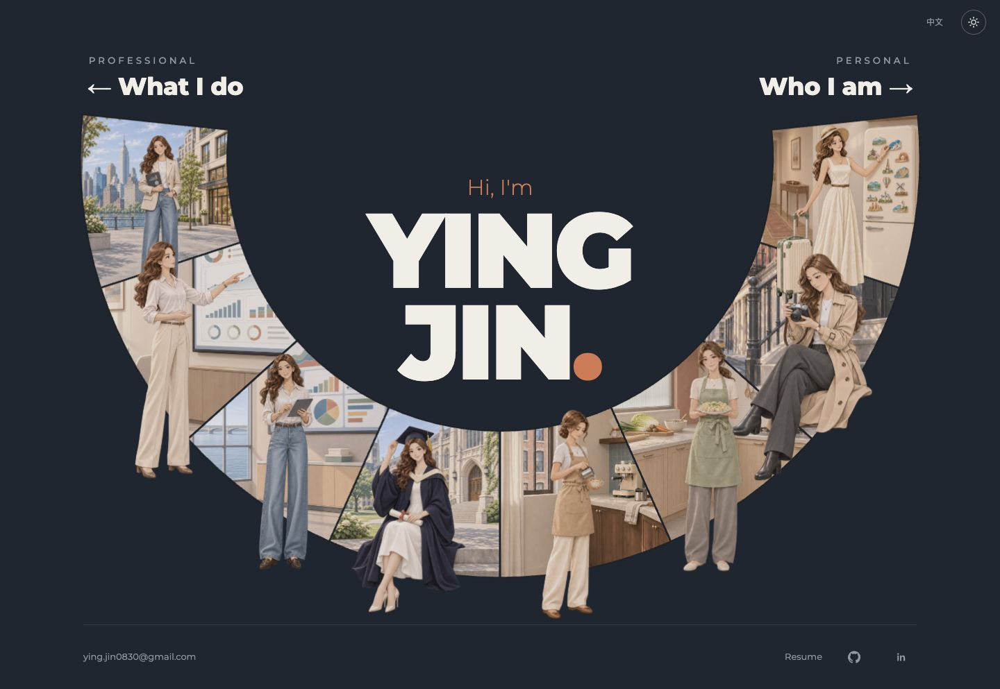
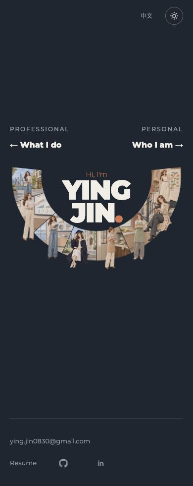
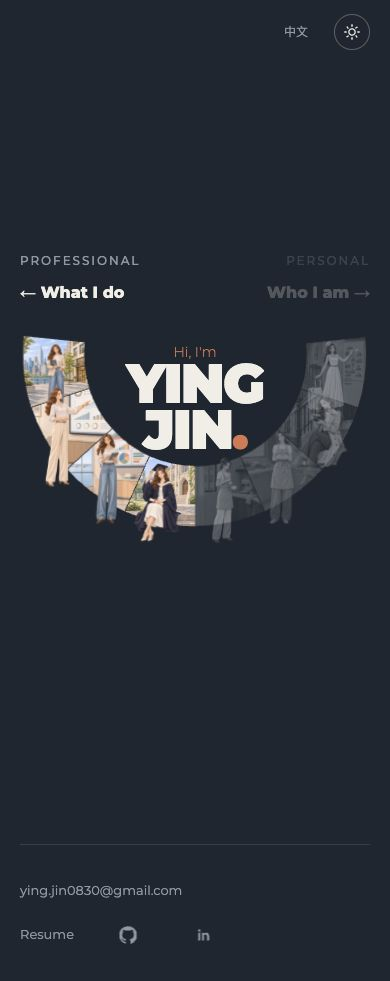
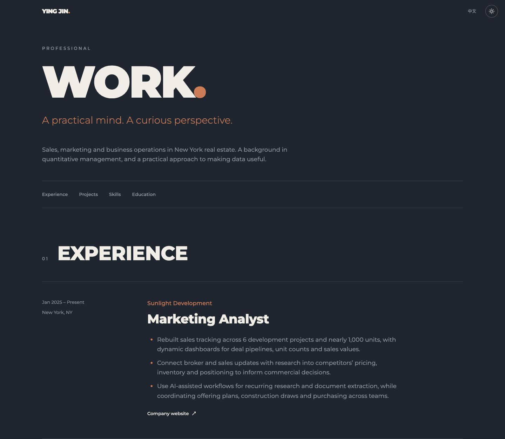
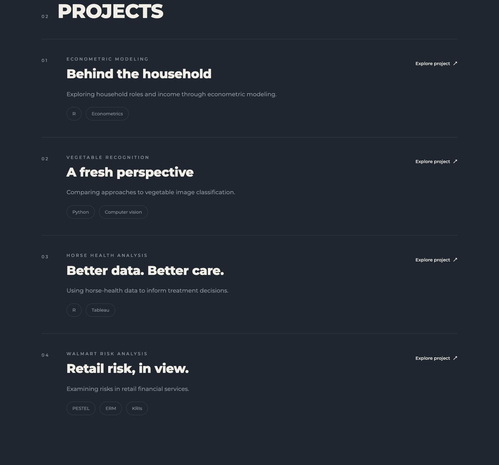
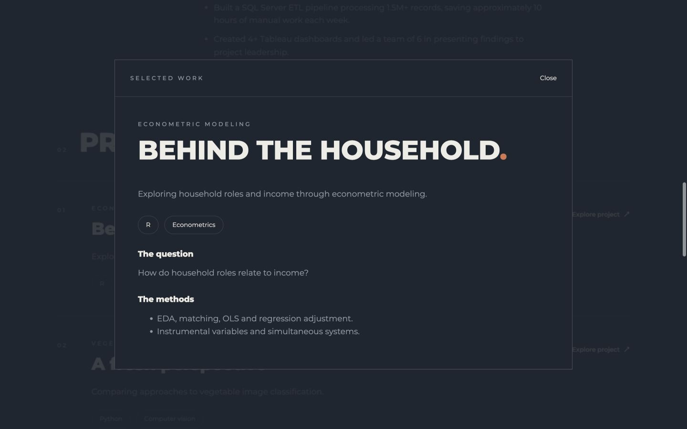
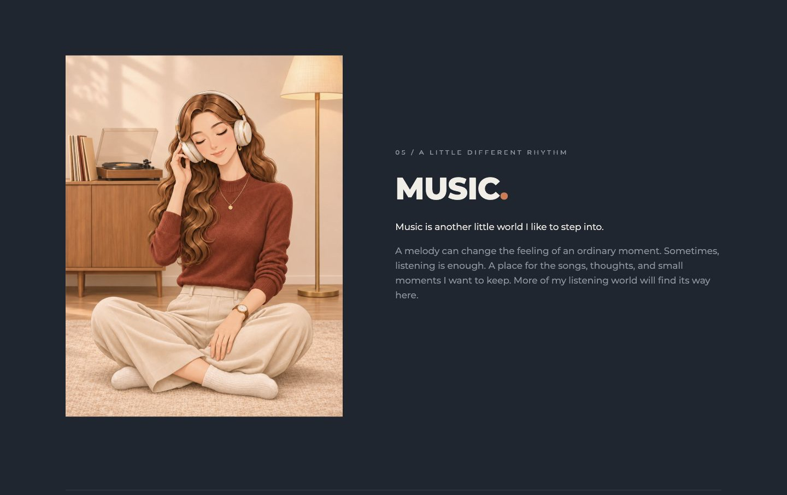
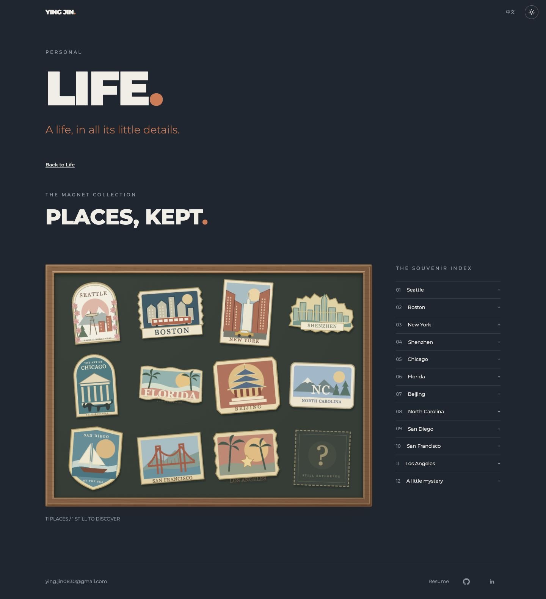
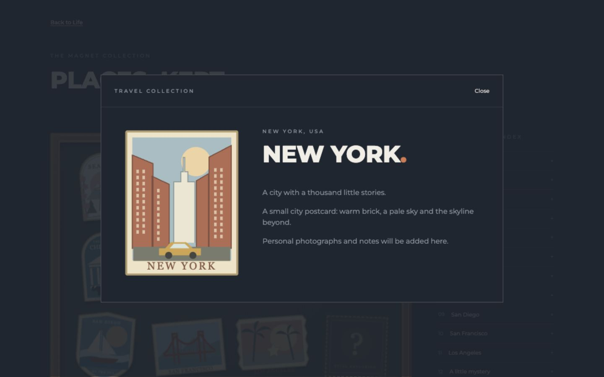
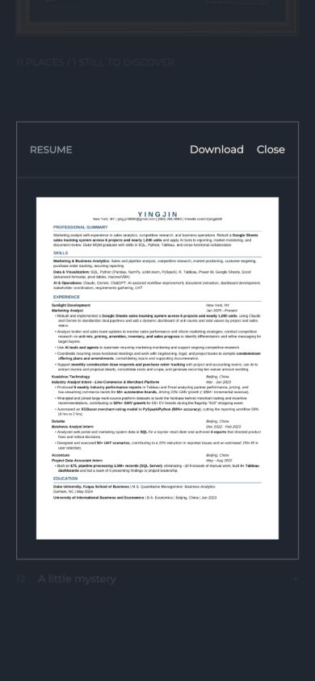

P1 · F1 把看起来能点击的文字做成明确入口
手机访问者不能依靠悬浮提示识别八个目的地，点箭头标题却只改变明暗。
Work/Life直接入口＋主题文字标签；图块、人像与文字共享清楚的目的地。
证据步骤：2
YING JIN / DESIGN AUDIT / 2026.11.24
视觉方向已经成立；当前优先提升入口清晰度、手机构图与可查看的专业证据。高级感下一步主要来自信息层级、真实内容与有分寸的动效。
桌面/手机首屏、Work、项目详情、Life六兴趣、Travel集合及详情、简历/页脚、主题/语言/键盘抽查
当前审查新截图＋实际浏览器交互＋当前代码配置核对。未修改网站界面或业务代码，未提交或发布。
| 级别 | 问题 | 建议 |
|---|---|---|
| P1 | 把看起来能点击的文字做成明确入口 | Work/Life直接入口＋主题文字标签；图块、人像与文字共享清楚的目的地。 |
| P1 | 重新安排手机首页的纵向构图 | 保留连续弧形，调整主体尺寸和上下位置，使一屏形成姓名—入口—内容的连续阅读顺序。 |
| P1 | 更早说明职位，并更早展示成果 | 首页一行定位；Work开场收紧；Resume/Email靠近职业简介。 |
| P1 | 建立可查看的代表案例，补齐学术项目上下文 | 先做一份销售追踪案例，再完善一份学术项目，加入可公开的真实图表/成果、职责和关键发现。 |
| P2 | 让用户随时知道位置并切换Work/Life | 轻量Work/Life切换＋长页章节定位；保留简洁页眉。 |
| P2 | 缩短内页长标语的打字过程，优先保证可预测 | 首页保留短欢迎语打字；内页用更快的整句淡入。统一命中区域、锁定反馈、章节焦点；再微调Dock放大的范围和节奏。 |
| P2 | 以真实细节代替“未来补充”的文案 | 补真实照片、旅行记忆、咖啡偏好和音乐片段；没有材料时先简化，不虚构个人经历。 |
| P2 | 改善手机PDF阅读并做专项性能/无障碍验证 | 清楚的打开PDF动作；提供适合手机的图片尺寸；修正焦点后再测冷缓存速度、键盘、屏幕阅读器和实际设备。 |
STEP 1 / 识别度强，职业定位不足
弧形构图、统一人物、超大姓名和橙色句点已经形成识别度。但第一屏没有职位与城市，招聘者需要继续探索才能判断相关性。
建议：保留构图，增加一行明确定位，例如“Marketing Analyst in New York · Sales analytics, market research & business operations”。

STEP 2 / 优先优化
390×844 下，主体上方约有200px空白，八张人物缩成小图，下方也有大段空白。主题名称不常显；模拟点击“What I do”后仍在首页，只锁定左半边并压暗右侧，下一步不明确。
建议：为 Work/Life 提供明确可点击入口，保留弧形，同时提供可见的主题文字导航；手机单独安排垂直节奏。


STEP 3 / 经历扎实，证据出现偏后
当前经历有清楚的角色、日期和量化范围，但第一份职位标题约在页面y=900附近。标题、标语、简介、导航与大分节标题占了较多首屏空间。项目行宽松，成果信息密度偏低。
建议：收紧首屏开场，让职位或代表成果提前出现；把当前公司的销售追踪工作发展为一份可查看的代表案例。


STEP 4 / 弹窗可用，说明不足以评估能力
“Explore project”弹窗包含研究问题和方法，却缺少学术项目标识、个人职责、时间、数据范围、关键发现和可查看成果。标题与引言基本重复列表内容。
建议：补齐“项目背景—我的职责—方法—关键发现—成果文件”，明确 Academic project。只使用已确认的信息，不增加未经支持的结果或因果表述。

STEP 5 / 风格协调，个性细节仍可加强
六个主题、对应高清人物和交替图文已统一。咖啡的社区咖啡店愿景有个人特色；音乐和摄影仍有“之后会补充”的句子，使完成的视觉配上了初稿内容。
建议：用每个兴趣一条真实细节和少量真实照片/作品增强个人感；目前没有素材时，先删减占位承诺，保留已经真实表达的观点。

STEP 6 / 交互值得保留，故事内容待完善
木框、11个地点和探索状态有记忆点，另有文字索引便于选择。纽约详情目前主要描述冰箱贴画面，并显示“Personal photographs and notes will be added here”。桌面集合页的两层大标题把画框推到了约y=700。
建议：完整保留框与磁贴；压缩集合页前导区，并逐个地点补一段真实记忆与照片，而不是只介绍磁贴图案。


STEP 7 / 路径完整，手机阅读可改善
邮箱、GitHub、LinkedIn、Resume齐全；简历弹窗有下载，关闭后焦点返回Resume。手机里简历图仅约300px宽，正文无法直接舒适阅读；图片可打开PDF，但缺少显眼的“打开PDF”文字动作。
建议：在Work简介附近增加轻量Resume/Email入口；手机简历提供清楚的打开PDF/全屏阅读动作。

STEP 8 / 基础支持良好，焦点需修正
1024px浅色中文抽查无横向溢出，主题/语言控件为44×44px。实测键盘切换语言后焦点落到BODY；从首页进入Education后焦点在main，下一次Tab指向顶部的Experience，而不是目标章节。
建议：保留语言切换前后的焦点；章节跳转时让目标标题或区域接收合适的焦点，并专项检查放大后的点击区域和Tab顺序。
手机访问者不能依靠悬浮提示识别八个目的地，点箭头标题却只改变明暗。
Work/Life直接入口＋主题文字标签；图块、人像与文字共享清楚的目的地。
证据步骤：2
大量空白包围很小的弧形，让主体、导航与页脚显得彼此分离。
保留连续弧形，调整主体尺寸和上下位置，使一屏形成姓名—入口—内容的连续阅读顺序。
证据步骤：2
姓名很鲜明，但职位、纽约背景和真实工作证据出现较晚。
首页一行定位；Work开场收紧；Resume/Email靠近职业简介。
当前工作有量化范围，项目详情却多为方法名。访问者难以判断具体贡献与产出。
先做一份销售追踪案例，再完善一份学术项目，加入可公开的真实图表/成果、职责和关键发现。
本次1440×900全页截图中Work约5071px、Life约6194px。章节索引在顶部，页眉只有返回首页和设置；跨区或跳章节需要回找。
轻量Work/Life切换＋长页章节定位；保留简洁页眉。
按当前700ms延迟、150ms逐字、500ms淡入配置估算，Work标语约7.05s、Life约6.15s才能完整呈现。不是性能实测，正文仍可立即使用。
首页保留短欢迎语打字；内页用更快的整句淡入。统一命中区域、锁定反馈、章节焦点；再微调Dock放大的范围和节奏。
完成度高的插画与占位内容并置，让页面显得仍在等待内容。
补真实照片、旅行记忆、咖啡偏好和音乐片段；没有材料时先简化，不虚构个人经历。
简历缩略图难读；首页16个图像文件约5.52MB，手机也使用1024×1536资源，是冷启动风险而非已证实的加载慢。
清楚的打开PDF动作；提供适合手机的图片尺寸；修正焦点后再测冷缓存速度、键盘、屏幕阅读器和实际设备。
首页短欢迎语可以保留。当前长标语逐字呈现的完整时间按配置估算：Work约7.05秒、Life约6.15秒；正文仍能立即使用。这是节奏取舍，不是页面卡顿结论。
默认配色与背景的静态对比度计算：深色主文字13.21、次级文字5.21、强调色4.87；浅色分别为13.32、5.40、4.54。仅是默认令牌计算，悬浮透明状态及整站可访问性仍需专项验证。
首页16个图像文件合计5,519,758 bytes，手机也使用相同原生尺寸。响应式资源是性能机会；本轮没有量测真实首开速度。
代码风险，后续专项验证：Dock重排实际SVG链接节点且未恢复原始顺序，可能让鼠标使用后的Tab顺序改变；本轮未完成稳定live复现。 透明出框人物层不接收指针，需统一视觉与交互区域。
下一轮先处理入口与手机布局，再完善内容证据。
本轮新截图：1440×900、390×844，以及1024×768浅色中文抽查。已查看页面未发现横向溢出。